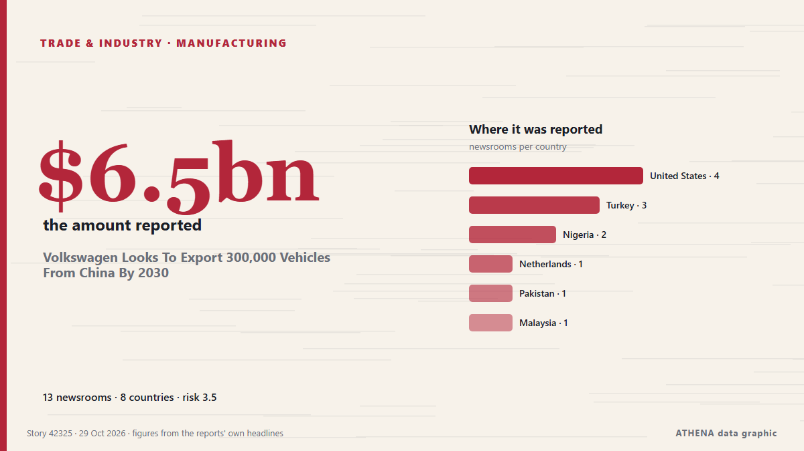

Volkswagen Looks To Export 300,000 Vehicles From China By 2030

Volkswagen said that for the first time it will also export technology developed in Hefei to other parts of Asia, the Middle East and South America, but not Europe for now. από Channels TV
Αναφέρθηκε ανεξάρτητα από 13 μέσα σε 8 χώρες από τις 26 Οκτ, πρώτο από το Electrek· η κάλυψη εξασθενεί. Το ATHENA εκτιμά τον κίνδυνο μέτριο (3.5/10), κυρίως λόγω της σοβαρότητας της βλάβης που περιγράφεται και της γεωγραφικής και τομεακής εμβέλειάς του. Η βεβαιότητα είναι 87% (υψηλή), καθώς το επιβεβαιώνουν 13 ανεξάρτητα μέσα με μέση αξιοπιστία πηγών 77%.
Γιατί έχει σημασία: Οι διαταραχές στο εμπόριο, τη βιομηχανία ή τις υποδομές διαδίδονται στις αλυσίδες εφοδιασμού και αλλάζουν κόστη και χρόνους παράδοσης μακριά.
Τι άλλαξε: 12 νέες αναφορές από 11 μέσα στο 24ωρο έως 29 Οκτ.
Πρώτη διατύπωση: German automaker Volkswagen posts $6.5B operating loss in Q3
Οι τίτλοι των ειδήσεων παρουσιάζονται στα αγγλικά, όπως δημοσιεύτηκαν.
Με μια ματιά
Επιλέγεται, βαθμολογείται και γράφεται από τη δημοσιευμένη μεθοδολογία του ATHENA. Κανένας συντάκτης δεν παρεμβαίνει σε μεμονωμένα γεγονότα. Πώς παράγεται ›
| 26 Oct 13:59 UTC | 1 |
|---|---|
| 26 Oct 16:59 UTC | 0 |
| 26 Oct 19:59 UTC | 0 |
| 26 Oct 22:59 UTC | 0 |
| 27 Oct 01:59 UTC | 0 |
| 27 Oct 04:59 UTC | 0 |
| 27 Oct 07:59 UTC | 0 |
| 27 Oct 10:59 UTC | 0 |
| 27 Oct 13:59 UTC | 0 |
| 27 Oct 16:59 UTC | 0 |
| 27 Oct 19:59 UTC | 0 |
| 27 Oct 22:59 UTC | 0 |
| 28 Oct 01:59 UTC | 0 |
| 28 Oct 04:59 UTC | 0 |
| 28 Oct 07:59 UTC | 1 |
| 28 Oct 10:59 UTC | 0 |
| 28 Oct 13:59 UTC | 0 |
| 28 Oct 16:59 UTC | 0 |
| 28 Oct 19:59 UTC | 0 |
| 28 Oct 22:59 UTC | 0 |
| 29 Oct 01:59 UTC | 0 |
| 29 Oct 04:59 UTC | 2 |
| 29 Oct 07:59 UTC | 3 |
| 29 Oct 10:59 UTC | 6 |
| 29 Oct 13:59 UTC | 1 |
| 28 Oct 10:53 UTC | 0.0 |
|---|---|
| 29 Oct 08:59 UTC | 2.8 |
| 29 Oct 11:52 UTC | 3.7 |
| 30 Oct 09:14 UTC | 3.6 |
| 30 Oct 09:14 UTC | 3.5 |
Γιατί αυτοί οι αριθμοί
Σημασία
Κίνδυνος
Βεβαιότητα
Η κάλυψη — ποιος το ανέφερε και πότε
ο τίτλος όπως δημοσιεύτηκε · ανοίγει το πρωτότυπο- Electrek · Ηνωμένες Πολιτείες · United StatesVolkswagen gets L3 autonomous driving test permit in China, eyes 2027
- The Next Web · Κάτω Χώρες · NetherlandsVolkswagen to take China-developed car technology to global markets
- Business Recorder · Πακιστάν · PakistanVolkswagen posts 5.8bn euro loss as Chinese competition bites
- Free Malaysia Today · Μαλαισία · MalaysiaVolkswagen posts €5.8bil loss as Chinese competition bites
- Punch · Νιγηρία · NigeriaVolkswagen to export 300,000 vehicles from China by 2030
- The Business Times · Σιγκαπούρη · SingaporeVolkswagen’s Q3 loss widens to more than 5 billion euros, raising restructuring stakes
- Türkiye Today · Τουρκία · TurkeyVolkswagen plans to ship 300,000 China-built cars abroad by 2030
- Channels TV · Νιγηρία · NigeriaVolkswagen Looks To Export 300,000 Vehicles From China By 2030
- New York Times Business · Ηνωμένες Πολιτείες · United StatesVolkswagen ‘Must Act Quickly’ After Largest Loss in Over a Decade
- ABC News (International) · Ηνωμένες Πολιτείες · United StatesVolkswagen posts $6.5 billion quarterly loss as China slump, Porsche writedown weigh on bottom line
- Anadolu Agency (English) · Τουρκία · TurkeyGerman automaker Volkswagen posts $6.5B operating loss in Q3
- DW English · Γερμανία · GermanyVolkswagen logs Q3 operating loss of €5.86 billion on Porsche writedown
- Türkiye Today · Τουρκία · TurkeyVolkswagen already treats China as a tech equal. Berlin must catch up
- Fortune · Ηνωμένες Πολιτείες · United StatesVolkswagen posts $6.8 billion quarterly loss as slumping China demand, Trump tariffs, and Porsche write-down weigh on earnings